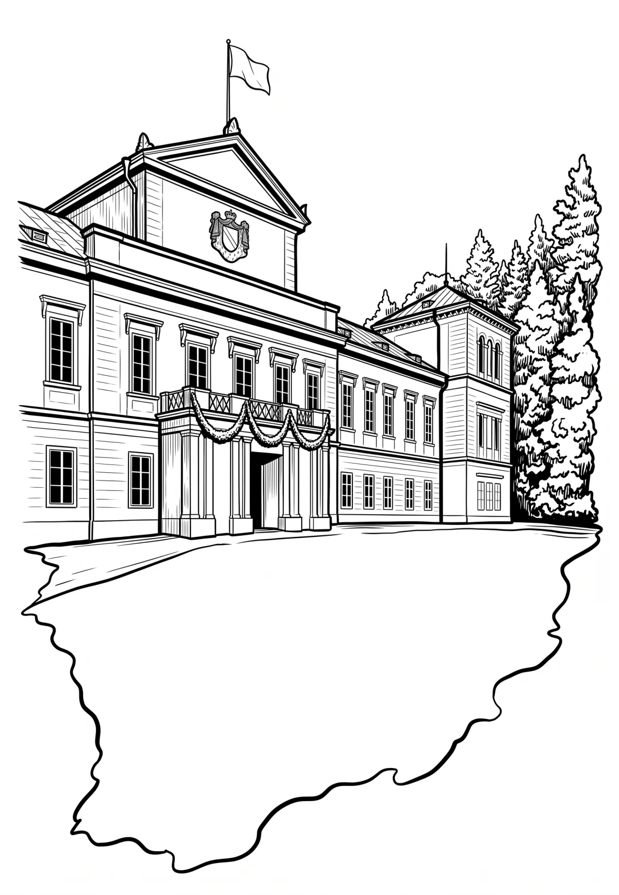

Státní zámek Kynžvart
Karlovarský kraj · 600 m n. m.

historická památka · #076
Zámek Kynžvart (německy Schloss Königswart) je venkovské šlechtické sídlo vystavěné na pomezí vídeňského klasicismu a empíru. Nachází se v západních Čechách, na okraji Slavkovského lesa v okrese Cheb v Karlovarském kraji, přibližně 1,5 km jihozápadním směrem od města Lázně Kynžvart, asi 20 kilometrů jihovýchodně od Chebu a asi 10 km severně od Mariánských Lázní.